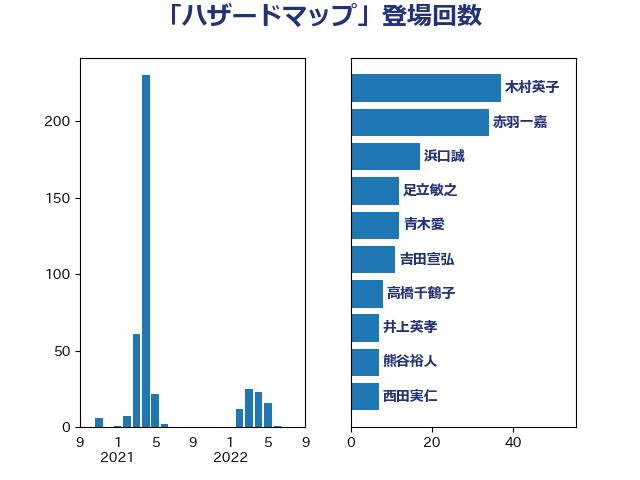

単語「ハザードマップ」

| 木村英子 | れいわ新選組 | 37 回 |
| 赤羽一嘉 | 公明党 | 34 回 |
| 浜口誠 | 国民民主党 | 17 回 |
| 足立敏之 | 自由民主党 | 12 回 |
| 青木愛 | 立憲民主党 | 12 回 |
| 吉田宣弘 | 公明党 | 11 回 |
| 高橋千鶴子 | 日本共産党 | 8 回 |
| 井上英孝 | 日本維新の会 | 7 回 |
| 熊谷裕人 | 立憲民主党 | 7 回 |
| 西田実仁 | 公明党 | 7 回 |
| 鈴木敦 | 国民民主党 | 7 回 |
| 小宮山泰子 | 立憲民主党 | 5 回 |
| 小里泰弘 | 自由民主党 | 5 回 |
| 簗和生 | 自由民主党 | 5 回 |
| 勝俣孝明 | 自由民主党 | 4 回 |
| 石垣のりこ | 立憲民主党 | 4 回 |
| 竹内真二 | 公明党 | 4 回 |
| 古川元久 | 国民民主党 | 3 回 |
| 大口善徳 | 公明党 | 3 回 |
| 小沢雅仁 | 立憲民主党 | 3 回 |
| 東徹 | 日本維新の会 | 3 回 |
| 深澤陽一 | 自由民主党 | 3 回 |
| 田村貴昭 | 日本共産党 | 3 回 |
| たがや亮 | れいわ新選組 | 2 回 |
| 岸真紀子 | 立憲民主党 | 2 回 |
| 杉久武 | 公明党 | 2 回 |
| 西岡秀子 | 国民民主党 | 2 回 |
| 高橋光男 | 公明党 | 2 回 |
| 中西祐介 | 自由民主党 | 1 回 |
| 佐藤啓 | 自由民主党 | 1 回 |
| 島尻安伊子 | 自由民主党 | 1 回 |
| 庄子賢一 | 公明党 | 1 回 |
| 斉藤鉄夫 | 公明党 | 1 回 |
| 朝日健太郎 | 自由民主党 | 1 回 |
| 本田太郎 | 自由民主党 | 1 回 |
| 梶山弘志 | 自由民主党 | 1 回 |
| 横山信一 | 公明党 | 1 回 |
| 横沢高徳 | 立憲民主党 | 1 回 |
| 渡辺周 | 立憲民主党 | 1 回 |
| 渡辺猛之 | 自由民主党 | 1 回 |
| 空本誠喜 | 日本維新の会 | 1 回 |
| 羽田次郎 | 立憲民主党 | 1 回 |
| 若松謙維 | 公明党 | 1 回 |
| 野上浩太郎 | 自由民主党 | 1 回 |
| 野中厚 | 自由民主党 | 1 回 |
| 長峯誠 | 自由民主党 | 1 回 |
| 階猛 | 立憲民主党 | 1 回 |
| 馬場成志 | 自由民主党 | 1 回 |